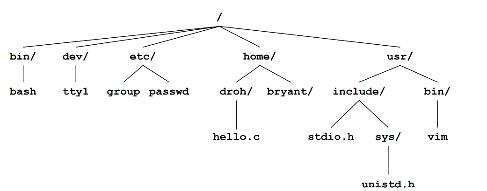
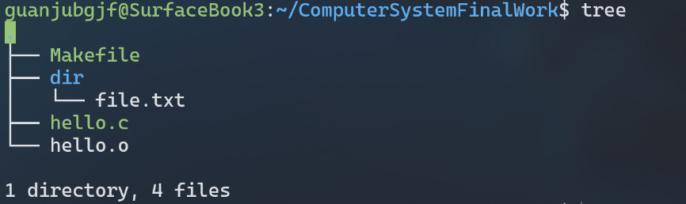
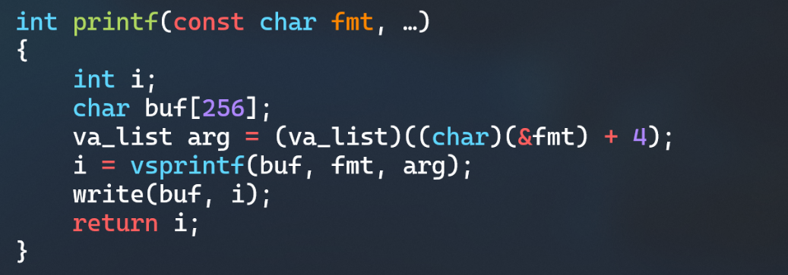
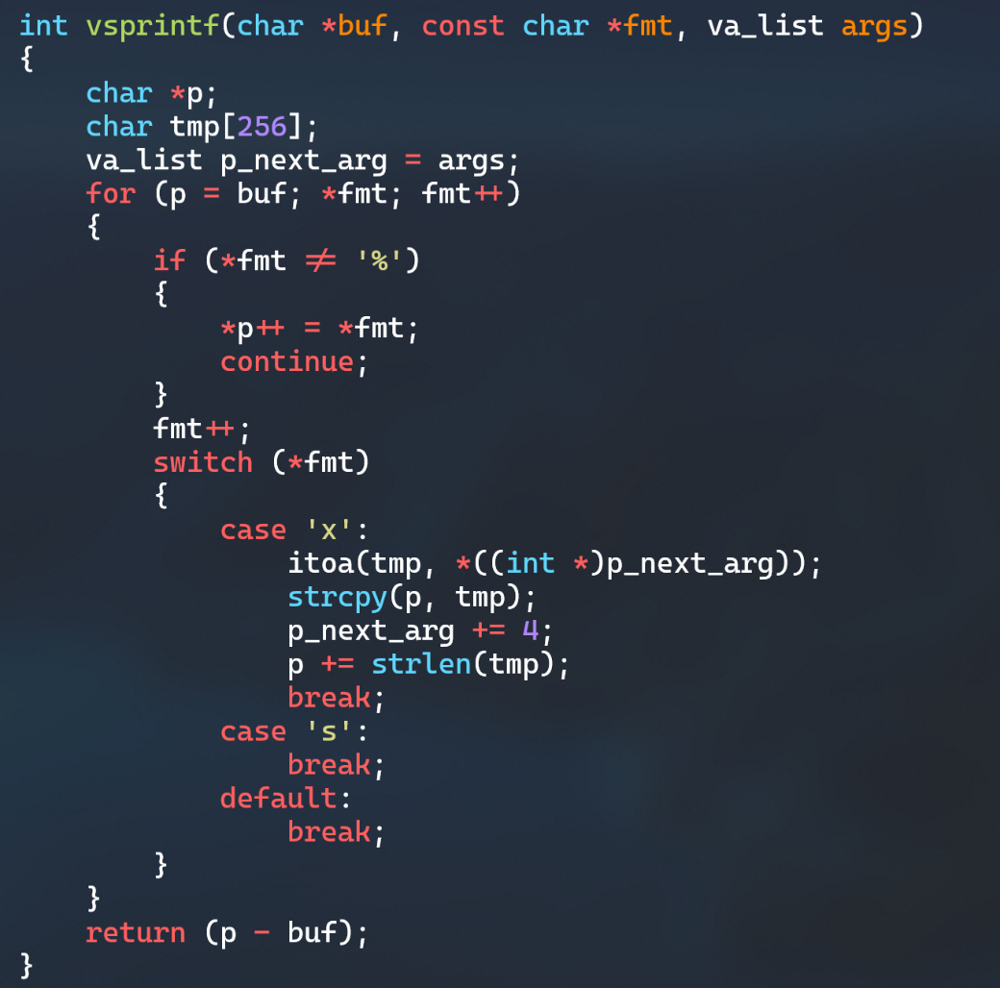
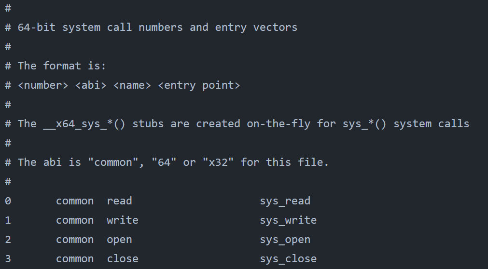
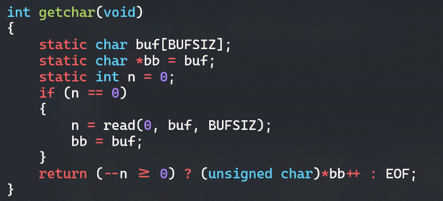

# 第8章 hello的IO管理
# Linux的IO设备管理方法
设备的模型化：所有的 IO 设备都被模型化为文件，而所有的输入和输出都被当做对相应文件的读和写来执行，这种将设备优雅地映射为文件的方式，允许Linux 内核引出一个简单低级的应用接口，称为 Unix I/O。
# 简述Unix IO接口及其函数
# Unix IO概述
每个Linux文件都有一个类型（type）来表明它在系统中的角色，包括：
- 普通文件： 包含任意数据
- 目录： 一组链接文件的索引
- 套接字： 用来与另一个进程进行跨网络通信的文件
- 命名通道
- 符号链接
- 字符和块设备
# 普通文件
普通文件包含任意数据。可以分为文本文件和二进制文件。文本文件是只包含 ASCII 或 Unicode字符的普通文件。二进制文件是所有其他文件，如目标文件， JPEG图像文件等。内核并不知道两者之间的区别。
Linux文本文件是文本行的序列。文本行是一个字符序列，以一个新行符 (‘\n’)结束。新行符为 0xa，与 ASCII 的换行符 (LF) 是一样的回车换行。
Mac 操作系统也是用0xa即 ‘\n’换行。
Windows 和因特网络协议使用‘\r\n’ (0xd 0xa)回车换行。
# 目录
目录是包含一组链接的文件。每个链接将一个文件名映射到一个文件。每个目录至少含有两个条目：
- . 是到该文件自身的链接
- .. 是到目录层次结构中父目录的链接
Unix中，目录为树状结构：

可以用tree命令查看当前目录下的树状结构：

# Unix IO 接口和函数
Unix I/O 包括如下接口：
- 打开文件。一个应用程序通过要求内核打开相应的文件，来宣告它想要访问一个 I/O 设备，内核返回一个小的非负整数，叫做描述符，它在后续对此文件的所有操作中标识这个文件，内核记录有关这个打开文件的所有信息。Shell 创建的每个进程都有三个打开的文件：标准输入，标准输出，标准错误。
- 改变当前的文件位置：对于每个打开的文件，内核保持着一个文件位置 k，初始为 0，这个文件位置是从文件开头起始的字节偏移量，应用程序能够通过执行 seek，显式地将改变当前文件位置 k。
- 读写文件：一个读操作就是从文件复制 n>0 个字节到内存，从当前文件位置 k 开始，然后将 k 增加到 k+n，给定一个大小为 m 字节的而文件，当 k>=m 时，触发 EOF。类似一个写操作就是从内存中复制 n>0个字节到一个文件，从当前文件位置 k 开始，然后更新 k。
- 关闭文件，内核释放文件打开时创建的数据结构，并将这个描述符恢复到可用的描述符池中去。
Unix I/O 包括如下函数：
- int open(char* filename，int flags，mode_t mode) ，进程通过调用 open 函数来打开一个存在的文件或是创建一个新文件的。open 函数将 filename转换为一个文件描述符，并且返回描述符数字，返回的描述符总是在进程中当前没有打开的最小描述符，flags 参数指明了进程打算如何访问这个文件，mode 参数指定了新文件的访问权限位。
- int close(fd)，fd 是需要关闭的文件的描述符，close 返回操作结果。
- ssize_t read(int fd，void *buf，size_t n)，read 函数从描述符为 fd 的当前文件位置赋值最多 n 个字节到内存位置 buf。返回值-1 表示一个错误，0表示 EOF，否则返回值表示的是实际传送的字节数量。
- ssize_t wirte(int fd，const void *buf，size_t n)，write 函数从内存位置 buf复制至多 n 个字节到描述符为 fd 的当前文件位置。
# printf的实现分析
printf的实现如下：

注意到在参数中最后边的省略号...，这个是可变形参的一种写法，当传递参数的个数不确定时，就可以用这种方式来表示。 (char*)(&fmt) + 4) 表示的是...可变参数中的第一个参数的地址。而vsprintf的作用就是格式化。它接受确定输出格式的格式字符串fmt。用格式字符串对个数变化的参数进行格式化，产生格式化输出。vsprintf的实现如下：

下一步printf调用write系统函数，在write中使用陷阱，通过系统调用syscall跳转到序号为1的sys_write入口点。下图为Linux Kernel (opens new window)为5.10.16.3版本的系统调用表中的前几项：

接下来，字符显示驱动子程序根据ASCII码，从字模库中提取相应字符的点阵，存储到vram中，同时也存储每一个点的RGB颜色信息。显示芯片按照刷新频率逐行读取vram，并通过信号线向液晶显示器传输每一个点，实现显示字符。
# getchar的实现分析
getchar的实现如下：

getchar函数通过调用read函数返回字符。其中read函数的第一个参数是描述符fd，0代表标准输入。第二个参数输入内容的指针，这里也就是字符c的地址，最后一个参数是1，代表读入一个字符，符号getchar函数读一个字符的设定。read函数的返回值是读入的字符数，如果为1说明读入成功，那么直接返回字符，否则说明读到了buf的最后。 read函数同样通过sys_call中断来调用内核中的系统函数。键盘中断处理子程序会接受按键扫描码并将其转换为ASCII码后保存在缓冲区。然后read函数调用的系统函数可以对缓冲区ASCII码进行读取，直到接受回车键返回。 这样，getchar函数通过read函数返回字符，实现了读取一个字符的功能。
# 本章小结
本章介绍了Unix是如何将I/O设备模型化文件并统一处理的，同时详细介绍了Unix I/O函数，并对标准I/O函数printf和getchar的实现进行了分析：标准I/O函数的实现都调用了系统的I/O函数，通过中断指令将程序控制权交给系统内核，进行相应的中断处理，然后对硬件进行相应操作。
← 第7章 hello 存储管理 结论 →